“Muốn hướng dẫn Nhân dân, mình phải làm mực thước cho người ta bắt chước.”
Bác thăm nông dân ở Thái Nguyên
14ảnh tư liệu
3phim tư liệu
7trích dẫn
6tấm gương
10câu trắc nghiệm
Tổng quan thành tố
Biểu hiện ổn định, nhất quán của tư tưởng, đạo đức, phương pháp
Thể hiện trong tư duy, làm việc, ứng xử, sinh hoạt
Củng cố niềm tin của Nhân dân
Độc lập, tự chủ
Đổi mới, sáng tạo
Không giáo điều, rập khuôn
Súc tích, trong sáng
Giản dị, dễ hiểu, gần gũi
Truyền cảm hứng
Phong cách Hồ Chí MinhGiản dị, gần dân, khoa học, nêu gương
Khoa học, sâu sát thực tiễn, gần dân
Làm đến nơi đến chốn
Lấy hiệu quả làm thước đo
Chân thành, nhân văn
Khiêm tốn, độ lượng
Tinh tế, tôn trọng con người
Giản dị, thanh cao, ngăn nắp
Quyết liệt chống lãng phí
Nhà sàn, đôi dép cao su – bài học sinh động
Ảnh tư liệu
1
Phong cách làm việc khoa học, sâu sát, gần dân
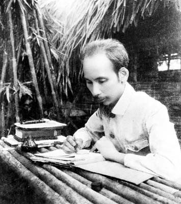
Chủ tịch Hồ Chí Minh làm việc ở chiến khuBác làm việc bên chiếc bàn tre, chiếc máy chữ giữa núi rừng chiến khu.
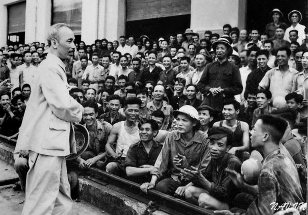
Chủ tịch Hồ Chí Minh nói chuyện với nhân dânBác đứng giữa đông đảo quần chúng, trò chuyện thân mật, lắng nghe ý kiến của nhân dân.
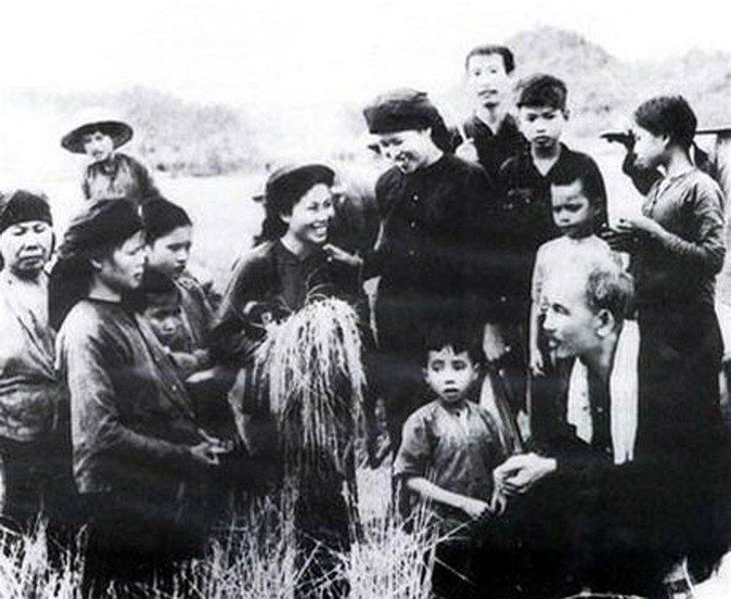
Bác Hồ thăm nông dân ở Thái NguyênBác ra tận đồng, cùng bà con xem lúa, hỏi chuyện mùa màng.
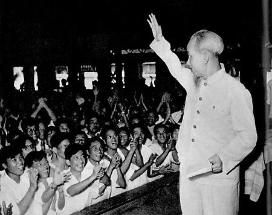
Bác Hồ nói chuyện với giáo viên toàn miền Bắc (1958)Tại lớp học chính trị của giáo viên, Bác nói chuyện giản dị, gần gũi; chính tại đây Người nêu câu “Vì lợi ích mười năm thì phải trồng cây, vì lợi ích trăm năm thì phải trồng người”.
2
Phong cách ứng xử chân thành, gần gũi
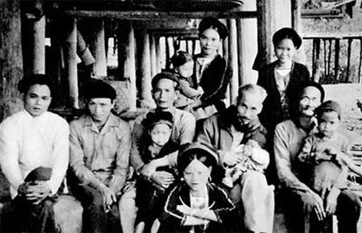
Bác Hồ đi thăm bà con dân tộc ở Việt BắcBác ngồi giữa bà con các dân tộc, gần gũi như người thân trong gia đình.
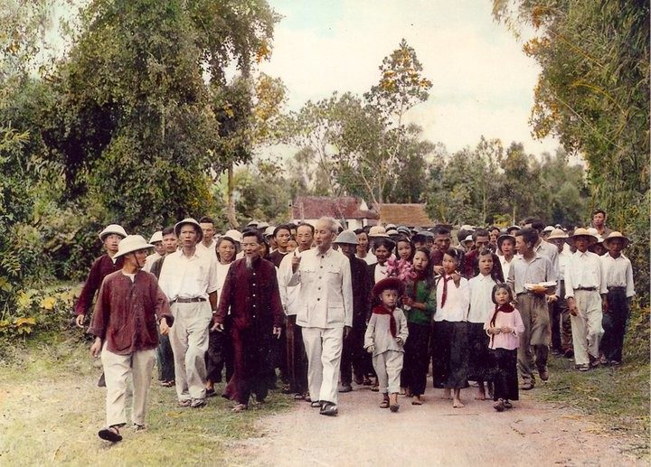
Bác Hồ về thăm quê Nghệ An (1957)Sau hơn 50 năm xa quê, Bác giản dị đi bộ giữa bà con quê hương.
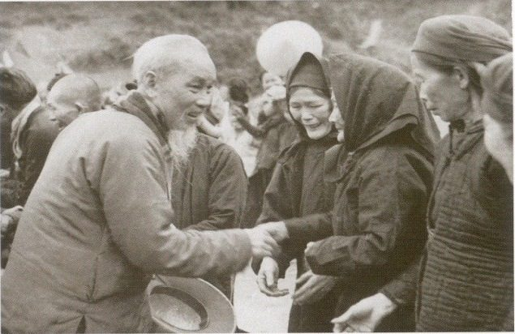
Bà con Pác Bó gặp lại Chủ tịch Hồ Chí Minh (20/2/1961)Bà con Pác Bó, Cao Bằng vô cùng xúc động khi gặp lại Bác sau 20 năm xa cách.
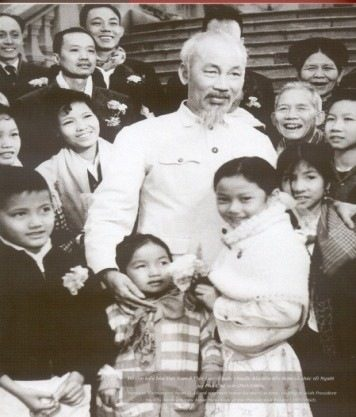
Bác Hồ với các cháu thiếu nhiNụ cười hiền hậu, cử chỉ trìu mến của Bác giữa các cháu thiếu nhi và nhân dân.
3
Phong cách sinh hoạt giản dị
Lán Nà Nưa – nơi Bác Hồ ở, làm việc ở chiến khuCăn lán đơn sơ giữa rừng, nơi Bác ở và làm việc trong những ngày chuẩn bị Tổng khởi nghĩa.Bữa cơm hằng ngày của Bác Hồ ở Phủ Chủ tịchBữa ăn đạm bạc, giản dị của vị Chủ tịch nước.Ngôi nhà sàn của Chủ tịch Hồ Chí MinhNơi Bác sống và làm việc trong Khu Phủ Chủ tịch, giản dị, gần gũi với thiên nhiên.
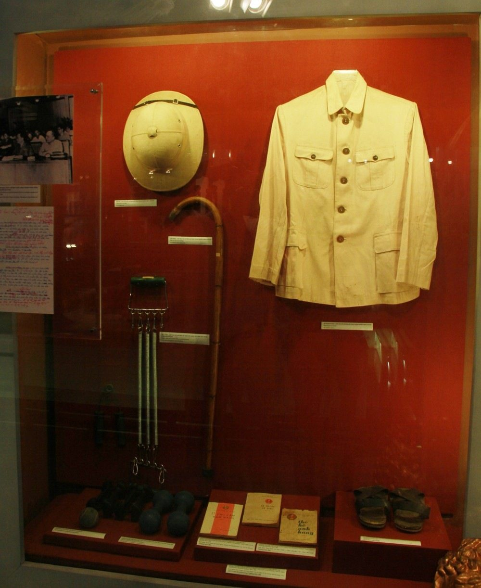
Các đồ dùng cá nhân của Chủ tịch Hồ Chí MinhMũ, áo, gậy, đôi dép cao su… những kỷ vật giản dị gắn bó với Bác.
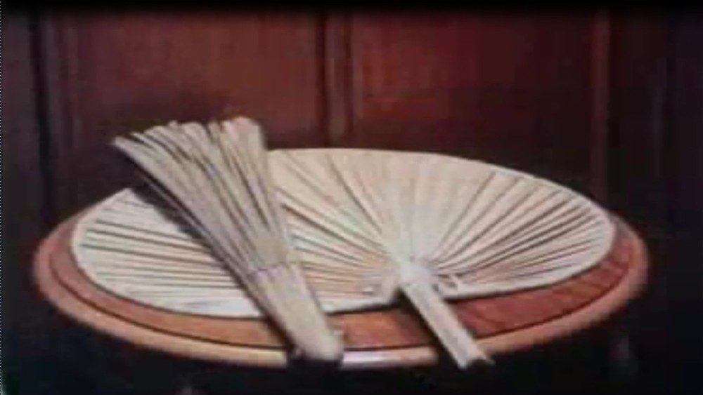
Chiếc quạt nan – đồ dùng cá nhân của BácHiện vật giản dị trong sinh hoạt hằng ngày của Chủ tịch Hồ Chí Minh.
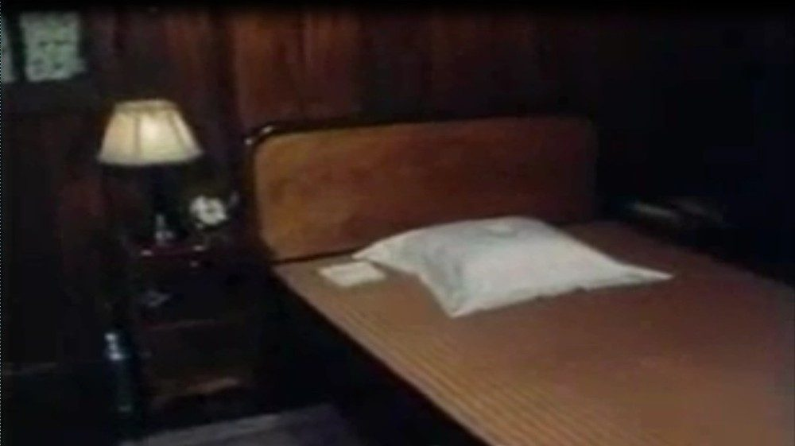
Chiếc giường của BácVật dụng đơn sơ trong phòng ngủ của Chủ tịch Hồ Chí Minh.
Phim tư liệu
Phim tư liệu đang được cập nhật
Trích dẫn, tác phẩm của Bác
Trích dẫn · Phong cách Hồ Chí Minh
Bấm vào trích dẫn hoặc ảnh để phóng to
Mạch trích dẫnBảy trích dẫn đi theo mạch
01Phong cách ứng xử gần dân, trọng dân
02Phong cách làm việc trách nhiệm, đến nơi đến chốn
03Phong cách tư duy đổi mới, sáng tạo
04Phong cách nêu gương
011945
Muốn được lòng dân
Phong cách ứng xử gần dân, trọng dân, vì dân; lấy sự hài lòng của dân làm thước đo.
“
Muốn được dân yêu, muốn được lòng dân, việc gì có lợi cho dân phải hết sức làm, việc gì có hại cho dân phải hết sức tránh.
02
Tinh thần trách nhiệm
Phong cách làm việc khoa học, tận tụy, có trách nhiệm, đặt hiệu quả công việc làm thước đo.
“
Tinh thần trách nhiệm là gì? Là khi Đảng, Chính phủ, hoặc cấp trên giao cho ta việc gì, bất kỳ to hay nhỏ, khó hay dễ, ta cũng đưa cả tinh thần, lực lượng ra làm cho đến nơi đến chốn, vượt mọi khó khăn, làm cho thành công. Làm một cách cẩu thả, làm cho có chuyện, dễ làm khó bỏ, đánh trống bỏ dùi, gặp sao làm vậy,... là không có tinh thần trách nhiệm.
03
Làm cho đến nơi đến chốn
Phong cách làm việc quyết tâm, triệt để, nói đi đôi với làm.
“
Đã phụ trách việc gì thì phải làm cho kỳ được, làm cho đến nơi đến chốn.
04
Đổi mới là chống cái cũ kỹ, hư hỏng
Phong cách tư duy độc lập, tự chủ, đổi mới, sáng tạo; không bảo thủ, trì trệ.
“
Đổi mới “là cuộc chiến đấu chống lại những cái gì cũ kỹ, hư hỏng để tạo ra những cái mới mẻ, tốt tươi”.
05
Tiến lên không ngừng
Phong cách dám nghĩ, dám làm, không ngừng vươn lên.
“
Người cán bộ cách mạng phải mạnh dạn, phải có quyết tâm, phải có chí khí tiến lên mãi, tiến lên không ngừng.
06
Làm mực thước cho người ta bắt chước
Phong cách nêu gương: nói đi đôi với làm, tự mình làm trước để người khác noi theo.
“
Quần chúng chỉ quý mến những người có tư cách, đạo đức. Muốn hướng dẫn Nhân dân, mình phải làm mực thước cho người ta bắt chước.
07
Ở đâu cũng phải gương mẫu
Gương mẫu là phong cách thường trực, không phụ thuộc vị trí, công việc.
“
Người đảng viên, dù công tác to hay nhỏ, địa vị cao hay thấp, ở đâu cũng phải làm gương mẫu cho quần chúng.